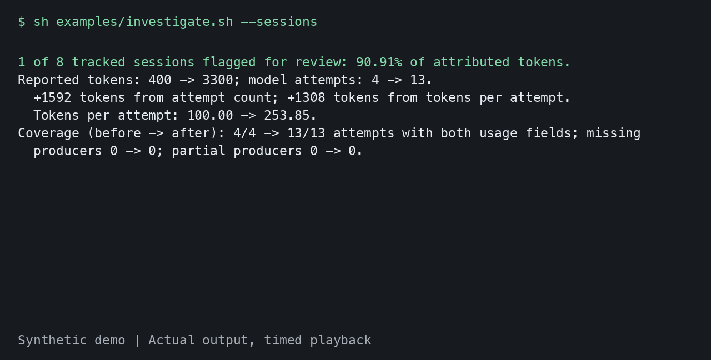

LLM Measurement
LLM Measurement is a set of open-source tools for understanding LLM usage: what changed, who drove it, and whether the usage records support the answer. They work from the telemetry you already collect, without a metric label for every user, and their outputs carry keyed hashes instead of raw user or session IDs.
They are designed with care and built on peer-reviewed sketching algorithms. Rankings come with guaranteed bounds, distinct counts come with a known statistical error, and missing usage is counted separately as missing. Every result on this site comes with the commands to reproduce it.
Guides
Each guide runs released versions on synthetic examples.
- Which user is driving my token spike?
Usage jumped? Compare two periods and see which users and sessions account for the increase.
- Who is tokenmaxxing? Find your heaviest AI token users
No spike needed: rank who uses the most tokens in a period, and see how concentrated usage is.
- Why did our LiteLLM usage jump, and are the spend logs complete?
The same comparison straight from LiteLLM's spend logs, plus a check on whether the records are complete.
- Prompt cache hit rate dropped after an update? Find whose uncached input grew
Prompt cache hit rate dropped after an update? Compare recorded cache shares and find which keys or sessions added uncached input with fleetdiff.
- How do I see LLM usage per user without a metric label for every user?
Check a collector configuration with fleetdiff diagnose and keep user rankings out of metric labels.
- Which windows look unusual?
Scan usage history for changes in tokens, coverage and contributors.
- Do my LLM traces record token usage and user IDs?
Check a local OTLP capture for usage and identity fields that are present, missing or zero.
- How many distinct users were active?
Count with keyed measurements that can be merged across workers.
Why summaries instead of raw logs? See the measured sharing and retention properties, with source data and methods.

Using LiteLLM?
Export request-level spend logs, install fleetdiff v0.7.0, and investigate what changed. Start with the released export, install and investigate path, or try a synthetic spend export.
For continuous measurement, use the collector's LiteLLM recipe to create metrics and summaries as traffic arrives.
Choose a tool
fleetdiff reads local spend exports, trace captures or summary files. The Collector connector creates metrics and summaries continuously. llm-sketchkit supplies the measurement library for Go services and Python analysis.